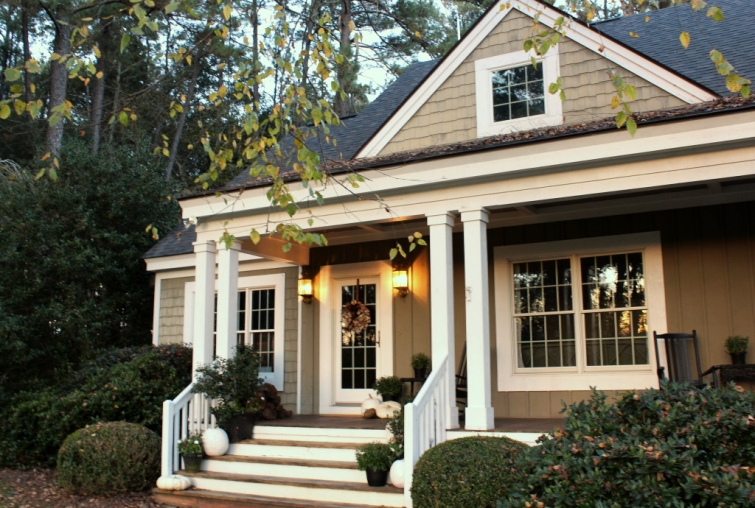
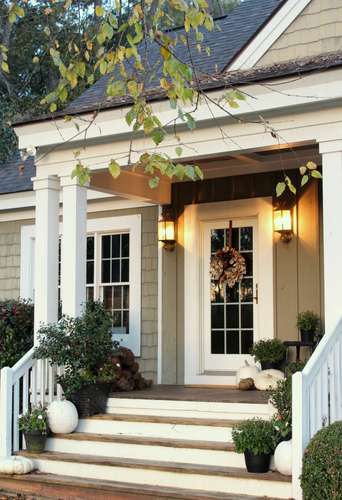
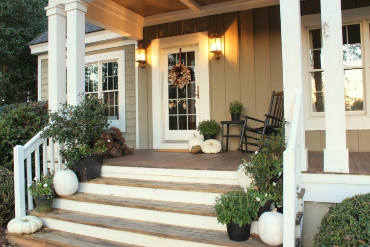

.png)
.PNG)
.PNG)
.PNG)
.PNG)
.PNG)
.JPG)
.JPG)
.PNG)
.PNG)


Finally…part 3! This post is the one I should have started with on our Thanksgiving tour. You should have come up to the front porch…
and walked up the steps with all the un-flowering mums and white pumpkins.
(Yes, I spray painted those babies – even though I read somewhere they might explode.)
Then, you could have come in the front door with the birch bark leaf wreath.

or maybe even the side door with the matching wreath.
But if you did enter through the front door…
then you would walk into the small foyer.You would see the buffet with its Thanksgiving vignette.
The theme of magnolias in pottery with white pumpkins is going on here like in the rest of the house.
And the ever present jar is filled with small bags of oatmeal-chocolate chip cookies. (I made them from an oatmeal cookie mix but added in chocolate chips and pecans.) They are take home treats for our guests. 🙂
After coming through the foyer, you would walk into the family room. (I can’t tell whether I should leave the lights on or off for taking photos in here, so you are going to have a mixture of both today.)
The cabinet you can’t see in the photo above (because it is on your right) is topped with more pottery and a jar of nuts. They’re everywhere!
The sofa wears old green plaid pillows and a new brown velvet one (from Pottery Barn.)
Our turkey is standing on the mantel along with yet another jar of nuts and a pottery mug.
There is also one of my all-time favorite quote books there…Patches of Godlight. It is done as a handwritten journal of Father Tim from Jan Karon’s Mitford series. If you like quotes, you will love this book. 🙂
Patches of Godlight Publisher: Viking Adult
More magnolia branches in a pottery pitcher balance the other end of the mantel.
And now if you were here, you would have a seat there in the chair by the fireplace. 🙂 We’ll be building another fire in the fireplace soon. The weather this week has been warm and rainy, but the crisp cool/cold air is moving in tomorrow.
I hope you have enjoyed your time on our little Thanksgiving tour the last week or so. I have finished my painting/redecorating project, and fingers crossed, I will be able to get a post up about it next week. Thank you to all of you who have entered the fabulous Minted giveaway. If you haven’t, check out all the details in the post here. Remember 3 of you are going to win $100 to spend on beautiful Christmas cards!
We have a fun fun party on tap here for this weekend with a number of out of town guests…and I have lots still to do to get ready for it. So I am signing off until either late Sunday night or Monday. I hope you have a wonderful weekend on this weekend before Thanksgiving. (Yes, I know it is Thursday, but I really have to get busy!)
Until next time…


.PNG)
So pretty! Did you really paint those white pumpkins? When I first saw them I thought “I wish I could find white pumpkins around here.”….then I read on and saw you painted them. So, I am thinking that I could buy fake orange ones and paint them. Happy Thanksgiving, Kelly!
Thank you so much for the pics! Your home is beautiful as usual! I’m a huge fan of your blog since years now and I still love it like at first sight 🙂 Your blog encouraged me to try the adventure myself and I recently launched my own blog. I hope it will be a success too 🙂 Thank you again for all the inspiration you give trough your blog!
——————————————————————
Thank you so much Claire! Best wishes on your new blog adventure. It starts out slow, but I know it will take off. Enjoy the journey! 🙂
Kelly
I like your birch bark leaf wreath. Your great room looks so comfy and relaxing. The more natural tones this year are very calming. Light that fireplace and have a fun weekend Kelly. You have a beautiful home and have so much to be Thankful for! We are having our first snowfall tonight. My orange pumpkins are getting a cover of white, but of the SNOW kind!! Maybe the snow will melt by Thanksgiving? 🙁
I can tell you are really enjoying your retirement!!! You are such an inspiration!! I have one year of teaching left after this year!! I always look forward to your posts!! You are very talented!!!
Love your front porch! But what I really like is the black and white photo collection! Happy Thanksgiving, Linda
The whole house is Thanksgiving ready!! Just love everything, as usual. So thankful I found your blog! Actually, just stumbled upon it one night by accident shortly after you began. Next morning, I couldn’t find it and searched and searched! Happy, happy! Went ever so long before I made any comments! I don’t make comments on a few that I follow. Just peek/read and move on. I wonder if there are many others that don’t reply to yours? I enjoy reading all the comments the readers leave. Thinking about your gathering this weekend and hope all goes well!!
Just beautiful!! I have cute pumpkin shaped cookies in one of my jars presently. Happy Thanksgiving!
Lovely, just lovely. I have read nearly the entire Fater Tim series, but have not acquired the book of quotes, guess it’s time that I did! Might make a really nice Christmas gift, too.
Enjoy your company. I’m thankful I found your blog some years ago. You are a true inspiration. My house thanks you too.
Kelly, so inviting. Yes, Patches of Godlight is so wonderful and inspiring. Love all
your little touches. I found two enormous jars and now have my cookie cutter oollectiion where I can see them and enjoy. All the metal ones in a jar and all the plastic ones handy the grands can play with them! Looks like your holidays are off to a wonderful start.
Hi Kelly ..I hope all of your baking preparations etc are going well and your father in law continues to improve. It must be such a blessing to live near to your family.
All of your house looks just perfect! I wonder if you ever sleep! 🙂 Like Ruth said “I’m jealous! but in a good way!” You’ve encouraged and motivated me to look at my house …closely!! So after a walk in the sun …( it’ s a lovely morning here) I’m going to start some reorganising! I don’t think I’ve commented on the steps to your porch and front door before but I just love them! and your wreath is so welcoming! I’d be happy sitting on that chair in front of the fire!! 🙂
Hope you have a good weekend,
Rosemary
Have a great weekend with your company! Happy Thanksgiving to you and your family! Patty
You have such an eye. I’m so jealous(but in a good way).
Kelly,
It all came together beautifully. I love the wreaths and the whit pumpkins. What kind of paint, spray?
My white mums have under-performed too. I’m nearly ready for Christmas decorations…just a little longer then cue the pine and Mercury glass.
xo,
Karen
I love how you always find a way to incorporate you favorite books, and always in the corresponding color theme! We should be neighbors! Lol!
Kelly, love the white pumpkins on your stairs and porch! You always add such festive touches inside! Patches of Godlight is one of my favorite quote books too…love Jan Karon! Have a. Happy Thanksgiving! Warmly, Gracia
P.S. I’m thankful for your blog :).
Well your guests will not want to leave! Enjoy getting all the little details ready for your Thanksgiving dinner. Fingers crossed that your pumpkins won’t explode!
I love the brown velvet pillow from PB, must feel luxurious.
Gorgeous….just as I knew it would be! I never tire of looking at your lovely home and decor. I look forward to the next post. Enjoy preparing for your guests! Have a lovely Friday and weekend.
Cookies for your guests huh? Be there in a minute.
Beautiful! You have such a talent of carrying your theme or mood through your whole house. Love how you used your pottery pieces. I have a few of those stashed away. Love those antique binoculars!! 🙂 Have a great weekend with your guests!
I had to laugh when you said they might explode. That would be something to have your guests coming up the steps and the pumpkins start blowing up and spreading pumpkin guts everywhere. I sure hope that doesn’t happen. 🙂 You home is so pretty and cozy and I hope y’all have a fabulous Thanksgiving!
Kelly,
I always look forward to seeing what you do with your home at the holidays. I am in awe of how you come up with new ideas every year. Have finally had a chance to pick out my favorite holiday cards from minted.com. I especially like two from the same artist, Jennifer Wick. One is Winter Foliage Frame, the other is A Beautiful Holiday. I’ll be keeping my fingers crossed!
Take care and have a wonderful Thanksgiving, Lindy
Kelly,
I look so forward to each and every tour of your lovely home. Fall is my most favorite time of the year so Ive loved your home in all its Fall colors! So warm & inviting. Love, love the oatmeal cookie idea! And your wreaths! WOW!! So pretty. We all must know where you got them. Blessing to your and yours during this Thanksgiving! May it be a wonderful time surrounded by your family & friends. Cant wait to see whats in store for next time….
You are definitely ready for Thanksgiving! Your home is beautiful as always!
Shelley
Hi Kelly,
All looks lovely and inviting. By all I mean your Thanksgiving series. I’ve been heck-a-busy and only now have had opportunity to read them. At this time I don’t know when I can connect again before December….so…May you and yours remember, be grateful, and rejoice in all.
I am a new subscriber to your blog after having stumbled upon it a few days ago (I have never subscribed to a blog before!). Your home has a lovely vibe and flow and it is so reflective of the inhabitants within. Thanks for sharing!
Kelly, everything is so lovely and creative! You are great at the details that pull together each room. Patches of Godlight is a wonderful book, and what a perfect time of year to put it out on display. Everything just looks warm and welcoming.
Happy preparing, and more importantly, have lots of laughter and love this weekend! We are turning colder here also after yet another very rainy day today! Thanks for the beautiful tour – LOVE that birch wreath – never saw that before – did you make that???
——————————————————————–
Thank you Mari! Yes, Patches of Godlight is such a wonderful book. I return to it over and over again.
I’m so glad you liked the wreath. It is from Target. Our river birch trees shed their outer layer all the time, but I would have never thought to do anything that creative with it. It is a Smith and Hawken product.
Kelly
Happy Thanksgiving Kelly! Thank you for your wonderful posts.
Kelly,
Please let us all know when you are announcing the winners of the “Minted” drawing because I plan to order my Christmas cards from them this year (thanks so for letting all of us know about them) and I want to get my order in as soon as I can. Thanks!
Yes, I believe I will take a seat in the chair beside the fireplace. Thank you. I think I would have to first feel that velvet pillow. I have enjoyed the way you have done your tour. Take a peek at everything and then settle in the room that is so serene and comfortable to count our blessings. And the room is lovely with or without lighting. It’s perfect. Your guests are lucky. I love the buffet in the entry. Your porch is so inviting and a true glimpse of the beauty and hard work inside. Love the colors. Love love the wreaths! Did you make them? So pretty. Have a good weekend with your company. Thank you, again for sharing it all with us.
Sherry
——————————————————————
You are welcome to that seat Sherry! Thank you for all your MANY compliments on the decorating. No, I did not make the wreaths. Those came from wonderful Target a few weeks ago. 🙂
Kelly
Love your taste and inspiring decorating ideas. Where did you obtain your coffee table? The legs make a statement and the casters are practical.
Your home is beautiful. Love the fall decor. Can’t wait to see your Christmas tour. On your mantle, is your mirror leaning against the wall,or is it hung on the wall? I’m always afraid a mirror will slip, if it’s just propped up there.
Kelly,
Thanks for the final tour our your Thanksgiving decorations. I love the new brown PB pillow. It is exquisite. I might have to use two of your ideas…the oatmeal cookie mix with nuts and chocolate chips added is genius and the nuts you used in jars for decorations is perfect. Thanks for sharing and have a great weekend!
Dawn
Can you tell me anything about your sofa? I’m looking for a new one that is dog friendly!!
love your home!!
Nan